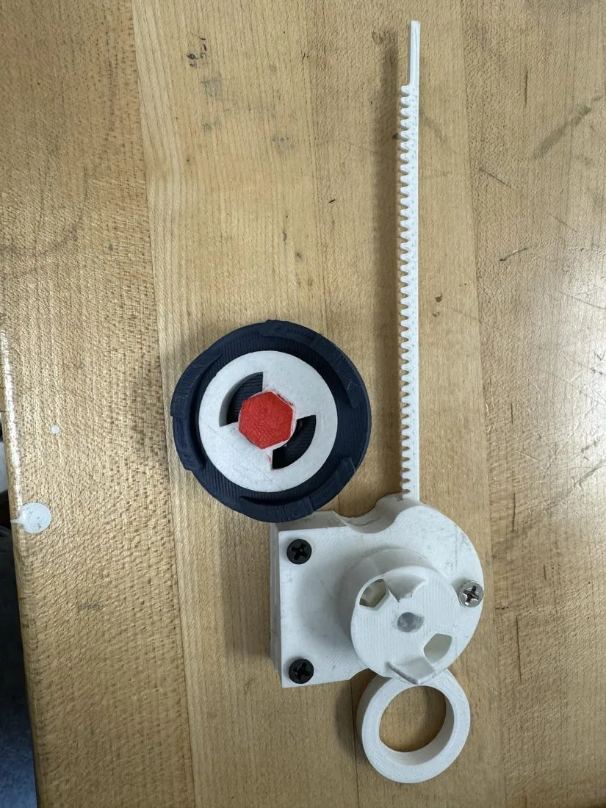

Custom 3D-printed Beyblade
| Type | Personal project |
|---|---|
| Dates | 2024 |
I reverse-engineered real Beyblades and their launchers, redesigned for better aerodynamics and spin duration, and printed the result until it beat the originals in spin-speed testing.

The design was the quick part. The week that actually mattered went into printer and slicer tolerances on an Ender 3 Pro — the interlocking parts are small enough that a tenth of a millimetre decides whether the assembly snaps together or spins apart, and no amount of CAD fixes a first layer that is squashed.
Anish Bhatia — Atlanta, Georgia
anishb.atl@gmail.com